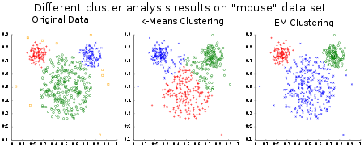

Data Mining Portfolio
Clustering Algorithms
Clustering is a process that is used by data scientist to generate groups within a data set. These groups can be viewed as groups with similar characteristics related to their attributes. With these formulated groups, one can further the use of the groups to help to predict future classification that occurs with data mining.

Agglomeratice Hierarchical
Agglomerative Hierarchical is a method that employs grouping and merging. Initially, each data instance will start off as its own cluster. From here, the clusters will begin to merge together based upon some type of distance metric. This is continually repeated until the algorithm finishes with one large cluster, so in order to get the desired amount of clusters one must work in revers to obtain the desired number of groups. The disadvantage to this method is that it is very computationally expensive and it is solely depended on the distance metric used to determine which clusters needed to be joined. This algorithm like that of k-means can be used to represent the data graphically, as well as generating small clusters that may be significant for later data discoveries.
K-Means
K-means is a heuristic clustering method which divides n instances into k clusters, and in which each instance belongs to the cluster with the k closest value. K-means can be very computationally expensive when it comes to execution, due to the fact each data point must be compared to each k value with some type of distance metric and calculation. K-means as easy as it is to implement and understand has some draw backs to the design. First off, k-means produces clusters that are in a 'globular' form, meaning that the cluster shape is usually circular in some manner. This may miss assign some data points that may be in a cluster of some arbitrary shape. Second, k-means is at the mercy of its k value. With a too small or a too large k value, miss assign may also occur. However, k-means is an excellent method for graphically representing data and can even be used as a preprocessing step for other data mining algorithms. 
#Edited to calculate the distance in terms of all 4 attributes of the iris data set
def euclidean(x1,x2,y1,y2,z1,z2,a1,a2)
distance= Math.sqrt(((x1 - x2) ** 2) + ((y1 - y2) ** 2) +((z1 - z2) ** 2) + ((a1 - a2) ** 2))
return distance
end
#Getting the desired # of K values from the user
puts "Number of K values?"
k=gets.to_i
kvalues=Array.new
#Filling the k clusters with random values
for i in 0...k
xx=(4+rand(4)).to_f
yy=(2+rand(3)).to_f
zz=(1+rand(7)).to_f
aa=(1+rand(3)).to_f
kvalues[i]=[xx,yy,zz,aa]
end
#Opening a csv of Iris data
input=File.open("iris.csv")
#Array of Flower measurements.
flower=Array.new
#Obtaining cordinates from the file
i=0;
sepal_length=0
sepal_width=0
petal_length=0
petal_width=0
input.each do
|coor|
sepal_length=coor.scan(/\d*\.\d/)[0].to_f
sepal_width=coor.scan(/\d*\.\d/)[1].to_f
petal_length=coor.scan(/\d*\.\d/)[2].to_f
petal_width=coor.scan(/\d*\.\d/)[3].to_f
flower[i]=[sepal_length, sepal_width, petal_length, petal_width]
i = i +1
end
#Kmeans Method
kvaluescompare=Array.new
kcomp=Array.new
kdistance=Array.new
kxyza=Array.new
xycount=Array.new
# Knowing that the data is for 3 flower types the while loop will check for at lest 3 clusters for
#values that keep repeating
while kvaluescompare[0]!=kvalues[0] or kvaluescompare[1]!=kvalues[1] or kvaluescompare[2]!=kvalues[2]
for i in 0...k
kvaluescompare[i]=kvalues[i]
end
kdistance.clear
#Obtaining the euclidean distance
for i in 0...flower.length
for j in 0...k
kcomp[j]=euclidean(flower[i][0],kvalues[j][0],flower[i][1],kvalues[j][1],flower[i][2],kvalues[j][2],flower[i][3],kvalues[j][3])
end
smallest=kcomp[0]
iteration=0
for j in 1...k
if smallest>kcomp[j]
smallest=kcomp[j]
iteration=j
end
end
kdistance[i]=[iteration,flower[i][0],flower[i][1],flower[i][2],flower[i][3]]
end
x=0
y=0
z=0
a=0
for i in 0...k
kxyza[i]=[0,0,0,0]
xycount[i]=0
end
#Calculating the total distance for each K value
for i in 0...kdistance.length
for j in 0...k
if kdistance[i][0]==j
kxyza[j][0]=kxyza[j][0]+kdistance[i][1]
kxyza[j][1]=kxyza[j][1]+kdistance[i][2]
kxyza[j][2]=kxyza[j][2]+kdistance[i][3]
kxyza[j][3]=kxyza[j][3]+kdistance[i][4]
xycount[j]=xycount[j]+1
end
end
end
#Calculating the new K cluster values
for i in 0...k
if xycount[i]==0
xycount[i]=1
end
x=kxyza[i][0]
x=x.to_f/xycount[i].to_f
y=kxyza[i][1]
y=y.to_f/xycount[i].to_f
z=kxyza[i][2]
z=z.to_f/xycount[i].to_f
a=kxyza[i][3]
a=a.to_f/xycount[i].to_f
kvalues[i]=[x,y,z,a]
end
end
#Obtaining the SSE and printing the vlaues for each K cluster value
sse=Array.new
sum=Array.new
for i in 0...k
sse[i]=0
sum[i]=0
end
for j in 0...k
for i in 0...kdistance.length
if kdistance[i][0]==j
sse[j]=sse[j]+(euclidean(kvalues[j][0],kdistance[i][1],kvalues[j][1],kdistance[i][2],kvalues[j][2],kdistance[i][3],kvalues[j][3],kdistance[i][4])**2)
sum[j]=sum[j]+1
end
end
end
for i in 0...k
print "The K", i, " cluster is: "
for j in 0...4
print kvalues[i][j], " "
end
print "\n"
print "The SSE of K", i, " cluster: ",sse[i],"\n"
print "The Data set of k",i," is:", "\n"
print sum[i], "\n"
end
#/////////////////////
#Observations
=begin
Compared to the Weka and Knime processes this algorithm is a lot less efficient and
the SSE is much higher than expected. This is due to the fact that algorithm is not
optimized at the best for the data. However, the K cluster values are not far from the
results produced by Weka or Knime. This does depend on the random numbers though.
=end